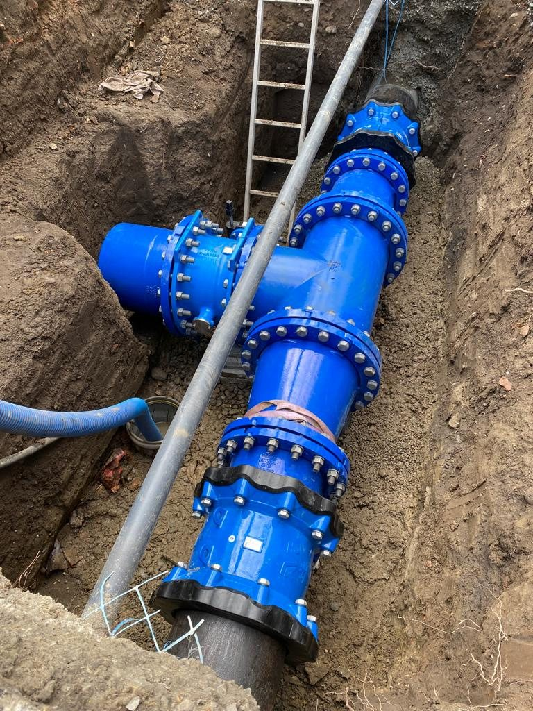
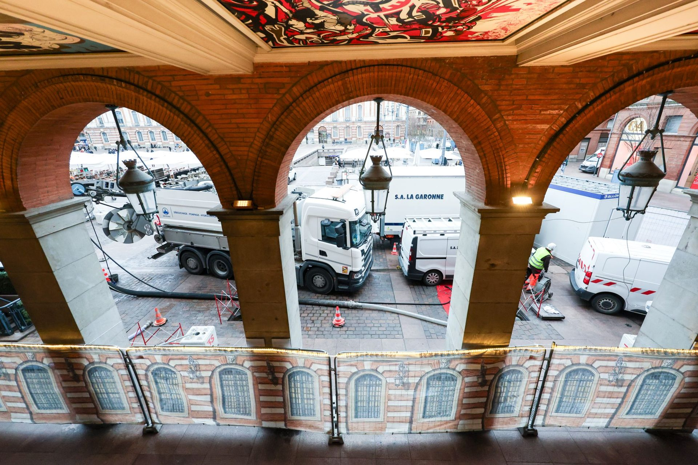

专业领域 02 / 饮用水
饮用水输配
敷设、更新并连接输送饮用水的管道，目标简单明确：供水不中断，水质有保障。
我们的理念
水必须送达，每一天，每一个水龙头。
饮用水管网的价值在于可靠性。更新旧管、新增接户管或接入新建小区，都必须在不影响水质、不长时间停水的前提下完成。
SA LA GARONNE 承担输水与配水管道的敷设更新、住户接户管以及配套水工构筑物施工。我们的班组在管网运行状态下作业，与运营方紧密配合，尽量减少停水并确保每一次恢复通水安全可靠。
消毒、压力试验、水质检测：通水验收本身就是一道独立工序，我们以与管道敷设同等的严谨对待。
服务内容
我们的施工能力。
从主干管道到住户接户管，我们覆盖饮用水管网的各个环节。
01
管道敷设与更新
输水与配水管道，适配各类常用材质（球墨铸铁、高密度聚乙烯等），可采用开挖或其他适配工艺。
02
住户接户管
在市中心及城郊新建、更新与改造饮用水接户管。
03
水工构筑物
阀门井、计量井、分区计量装置、排气阀与排泥阀。
04
运行管网上的接驳
与运营方共同排定作业计划，将停水时间与影响范围压缩到最低限度。
05
试验与消毒
通水前进行压力试验、冲洗、消毒与水质化验。
06
路面与场地恢复
回填压实控制、车行道与人行道原样恢复、竣工资料移交。

图卢兹 · 核心城区施工不打断城市运转
施工方法
从开工第一天就为通水做准备。
水质与供水连续性贯穿施工的每个阶段。
第 01 步准备与协调
地下管线探测、法定申报、与运营方商定停水安排、向周边居民发布通知。
第 02 步安全防护
警示围挡、沟槽支护、出入与通行组织、保护邻近管道与施工人员。
第 03 步敷设与接驳
土方开挖、管道垫层、管节组装、接户管与构筑物接驳。
第 04 步试验与通水
压力试验、消毒、水质化验、逐步恢复通水以及路面恢复。
可控的施工约束
带压运行的管网，正常运转的城市。
我们兼顾饮用水的卫生要求与城市施工的现实约束。
运行中的管网停水最小化与运营方协同市中心多管线并存卫生与水质原样恢复
技术参数
管径输水 · 配水
管材球墨铸铁 · 高密度聚乙烯 · 钢管
构筑物井室 · 阀门 · 计量
FNTP 资质5118 · 城区给水管网
通水验收试验 · 消毒 · 化验
技术设计部内设 · 施工图与竣工图
服务区域图卢兹都市区及周边
其他专业领域
覆盖给排水管网的完整能力。
联系我们
需要新建、维护或修复管网？
欢迎与我们探讨您的项目。凭借 70 年的施工积累，我们的团队将给出精准答复。